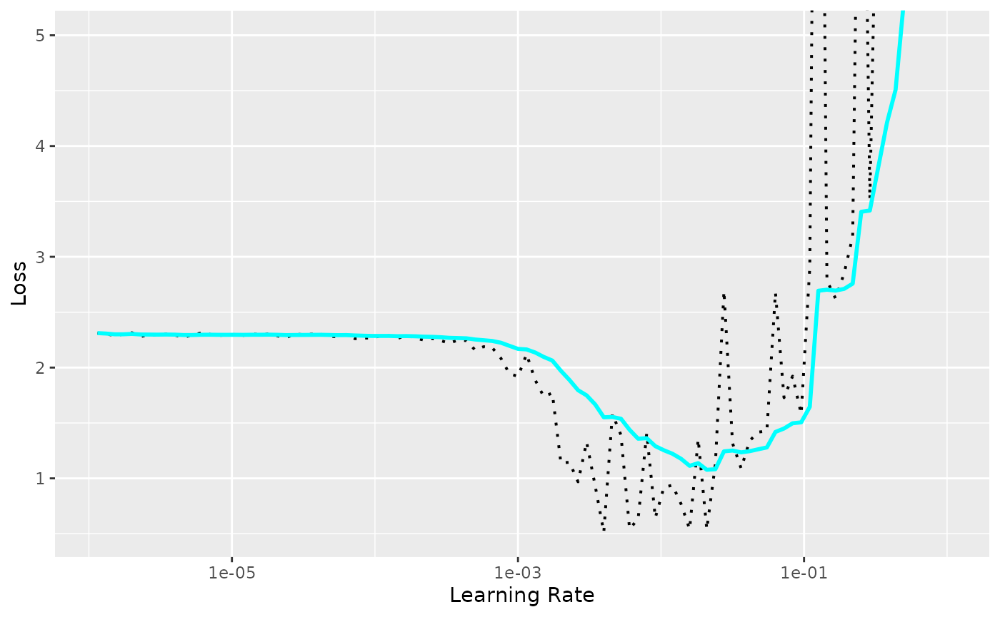

Utilisation de la recherche de taux d'apprentissage
Source :vignettes/articles/lr-finder.Rmd
lr-finder.Rmd
library(luz)
library(torch)
library(torchvision)
set.seed(1)
torch::torch_manual_seed(1703)Dans cet article, nous discutons comment trouver un bon taux d’apprentissage pour votre modèle. Trouver un bon taux d’apprentissage est essentiel pour l’apprentissage correct de votre modèle. Si il est trop faible, vous aurez besoin de trop d’itérations pour que votre fonction de perte converge, et cela pourrait être inutilisable si votre modèle prend trop de temps à s’exécuter. Si il est trop élevé, la fonction de perte peut exploser et vous n’aurez jamais réussi à minimiser la perte.
Le taux d’apprentissage peut être considéré comme un autre hyper-paramètre de votre modèle qui nécessite une réglage mais, il existe des techniques qui permettent de sélectionner un bon taux d’apprentissage pour votre modèle sans avoir à utiliser la stratégie coûteuse consistant à ajuster plusieurs modèles avec différents taux d’apprentissages et en choisissant ensuite le meilleur.
Cet article de Leslie
Smith qui est devenu populaire après que leur approche ait été mise en
œuvre dans la plateforme FastAI, propose de commencer avec un taux
d’apprentissage très faible et le faire augmenter progressivement
jusqu’à atteindre un taux d’apprentissage élevé. À chaque itération on
enregistre la valeur de perte et à la fin on les visualise en fonction
du taux d’apprentissage. On peut alors utiliser ces résultats pour
décider d’un bon taux d’apprentissage. C’est ce que fait
lr_finder, et nous allons voir comment l’utiliser.
Tout d’abord, téléchargeons et préparons les données de MNIST :
dir <- "~/Downloads/mnist" # répertoire de cache
train_ds <- mnist_dataset(
dir,
download = TRUE,
transform = transform_to_tensor
)On peut maintenant définir notre modèle. On va utiliser un petit CNN dans le style LeNet.
net <- nn_module(
"net",
initialize = function() {
self$features <- nn_sequential(
nn_conv2d(1, 32, 3, 1),
nn_relu(),
nn_max_pool2d(2),
nn_conv2d(32, 64, 3, 1),
nn_relu(),
nn_max_pool2d(2),
nn_dropout(0.1),
nn_flatten()
)
self$classifier <- nn_sequential(
nn_linear(1600, 128),
nn_dropout(0.1),
nn_linear(128, 10)
)
},
forward = function(x) {
x %>%
self$features() %>%
self$classifier()
}
)On peut maintenant utiliser la fonction lr_finder pour
enregistrer la perte avec différents taux d’apprentissages. Il est
important d’utiliser la rechercheur de taux d’apprentissage avec tous
les autres hyper-paramètres du modèle fixés, car ils peuvent influencer
le choix du taux d’apprentissage. Par exemple, selon la taille des
batches, vous pourriez vouloir choisir différents taux
d’apprentissages.
model <- net %>% setup(
loss = torch::nn_cross_entropy_loss(),
optimizer = torch::optim_adam
)
records <- lr_finder(
object = model,
data = train_ds,
verbose = FALSE,
dataloader_options = list(batch_size = 32),
start_lr = 1e-6, # la plus petite valeur qui sera essayée
end_lr = 1 # la plus grande valeur à l'essayer
)
str(records)
#> Classes 'lr_records' and 'data.frame': 100 obs. of 2 variables:
#> $ lr : num 1.15e-06 1.32e-06 1.51e-06 1.74e-06 2.00e-06 ...
#> $ loss: num 2.31 2.3 2.29 2.3 2.31 ...Le résultat est un tableau de données avec les pertes et le taux d’apprentissage à chaque étape. Vous pouvez utiliser la méthode de visualisation intégrée pour afficher les résultats exacts, ainsi qu’une valeur de perte lissée exponentiellement.
plot(records) +
ggplot2::coord_cartesian(ylim = c(NA, 5))
On peut voir que avec des taux d’apprentissage faibles la perte ne diminue pas. À un certain point la perte commence à diminuer jusqu’à atteindre un point où elle commence à augmenter et enfin à exploser.
Et comment choisissons-on le taux d’apprentissage en utilisant cette courbe? Sylvain Gugger a posé cette question dans cet article et répond
Pas celui correspondant au minimum. Pourquoi ? Eh bien, le taux d’apprentissage qui correspond à la valeur minimale est déjà un peu trop élevé, puisque nous sommes à la limite entre l’amélioration et l’explosion totale. Nous voulons aller à une ordre de grandeur en dessous, une valeur encore agressive (pour qu’on s’apprenne vite) mais toujours en retrait par rapport à l’explosion.
Ainsi, dans notre exemple, on choisira 1e-3 au lieu de 1e-2. On peut utiliser le taux d’apprentissage ainsi choisi dans notre modèle principal avec les autres hyper-paramètres ajustés pour obtenir un bon score et minimiser au mieux la fonction de perte.